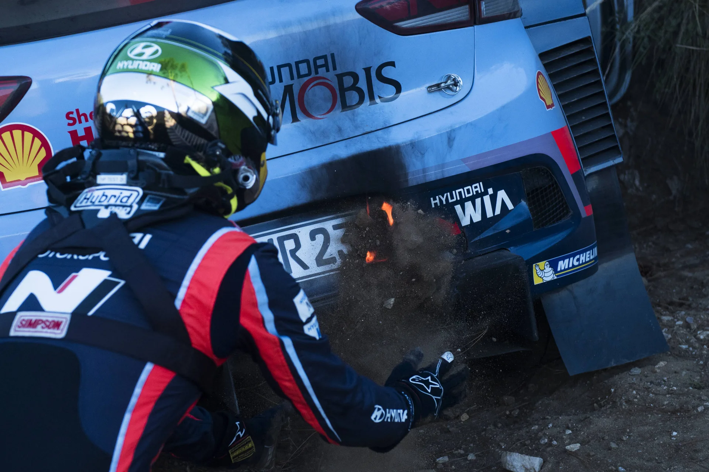
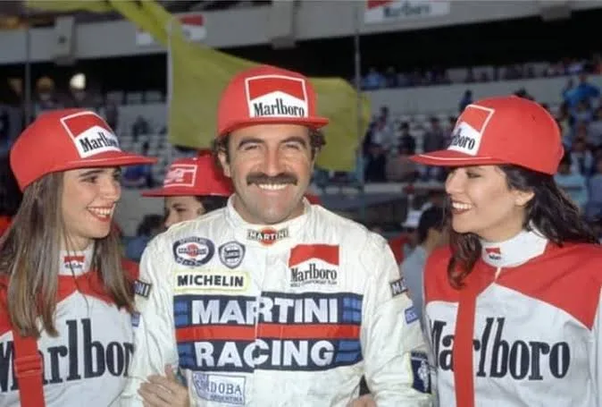
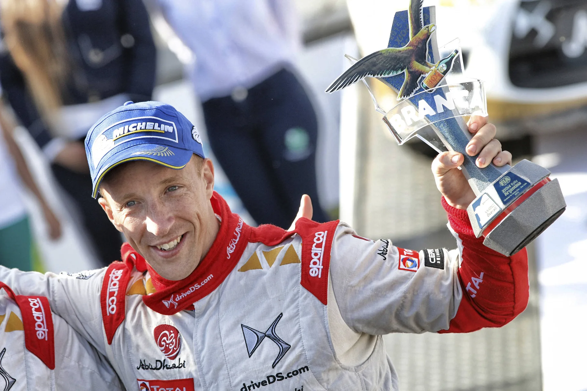
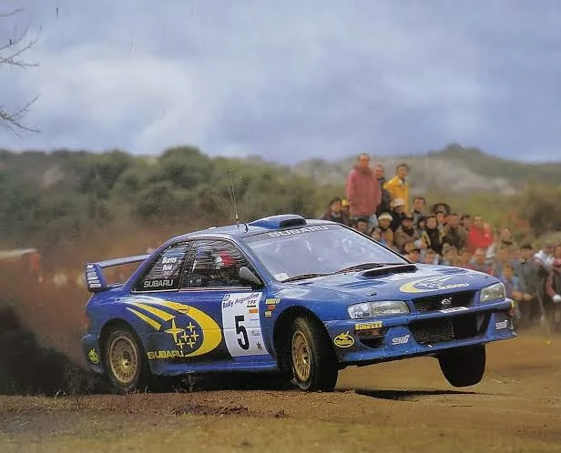
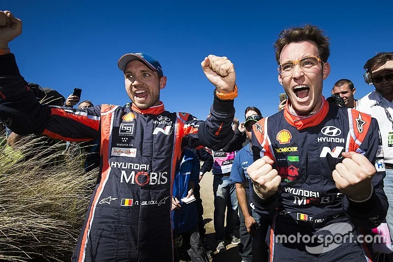
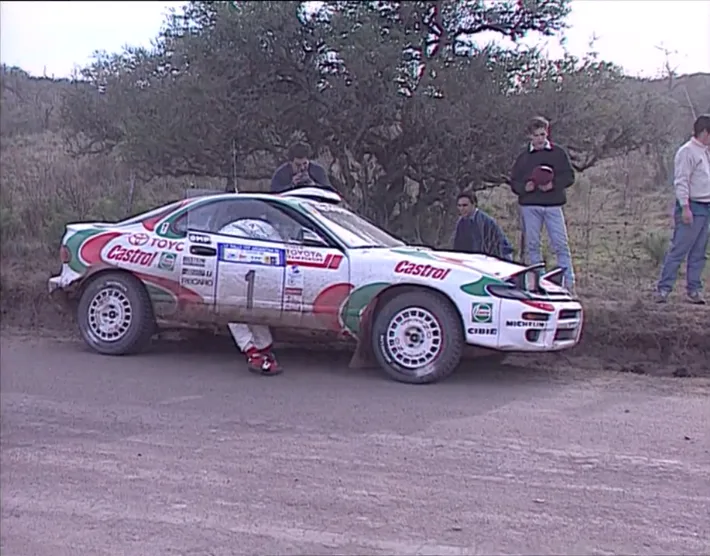
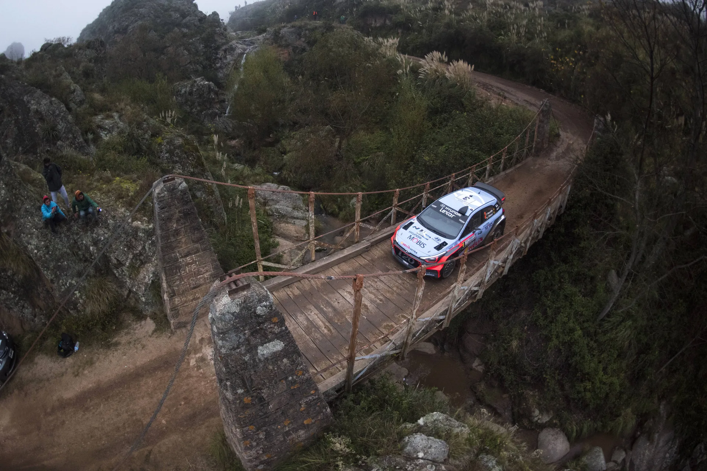
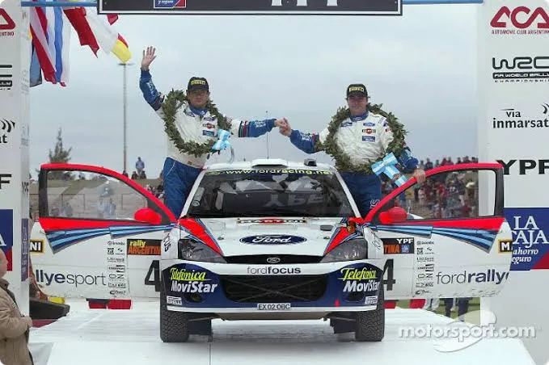

7 Dramatic Rally Argentina Moments
One of the WRC's all-time classic events is set to return to the calendar in 2028. Rally Argentina will be back (if all goes well with the candidate event) after a 9-year absence, featuring iconic stages like El Condor, Mina Clavero and Santa Rosa - San Agustin. Argentina has been part of the WRC calendar 37 times before, and has given us some truly dramatic and memorable moments. To celebrate the rally's return to the WRC calendar, lets take a look at 7 dramatic moments from past editions of Rally Argentina.

1988: Recalde's Only Win
Home hero Jorge Recalde wins for Lancia
The 1988 edition of Rally Argentina was lacking in terms of manufacturer entries, with Lancia's Miki Biasion being the only real championship challenger in the event's entry list. Alongside the Italian, Lancia would field an Integrale for home-hero Jorge Recalde. The Argentinian had finished 2nd in the rally in 1987, a minute behind Biasion, driving a factory Lancia, and had also finished 4th in the 1986 edition of the rally.
Recalde would lead the rally following Tuesday's SSS, having a close battle with teammate Biasion on Wednesday and Thursday. Biasion would grab the lead away from his teammate on Friday, after the Argentinian hit a rock and broke a wheel as well as a hub and steering arm. Biasion incredibly hit the same rock, but only damaged his sumpguard.
The Italian would however drop back to second after losing close to seven minutes following an engine issue. It was later discovered that Biasion's Lancia had suffered a blown fuse, which was later fixed in service. Recalde now had a healthy advantage, which he would manage until the end. This was Recalde's first and only win in the WRC, and the only one for an Argentinian in the championship.

2015: Volkswagen's Implosion is Meeke's Gain
All three VW cars failed to make it to the finish, while Kris Meeke claimed a maiden WRC win.
@World / Red Bull Content Pool
After three rallies in the 2015, it looked to be business as usual for Volkswagen. Despite a new ruleset designed to stop Sébastien Ogier's dominance, by forcing the championship leader to sweep the road on a rally's opening two days, the Frenchman was being his usual dominant self. Ogier had won all of the opening three rallies in the season, despite being first on the road on the first two days for Sweden and Mexico. Argentina would however be a different story.
On Friday's opening 52km test, the Frenchman would stop dead in his tracks with a mechanical issue. The same stage would cause more drama, as Ogier's teammate, Andreas Mikkelsen, would go off the road and pick up a puncture thanks to a misheard pacenote. That would later cause suspension damage, which would lead to the Norwegian's retirement. Latvala in the remaining Polo R WRC would also hit trouble, suffering from gearbox issues, before retiring from 3rd on Sunday.
Kris Meeke would jump to the lead on Friday's opening test and wouldn't look back. The Northern Irishman would manage his lead and win his first ever rally, ahead of teammate Mads Østberg, Citroën's first 1-2 finish since 2012. Only five top-class cars made it to the finish without making use of the Super Rally rules, in an absolutely car breaking rally. Elfyn Evans finished 3rd, giving himself his first podium in the WRC.
This would be the only time Volkswagen would fail to finish on the podium in 52 rallies from 2013 to 2016.

1999: Burns loses out to Kankkunen
Richard Burns would lose a win to his teammate following a 10 second penalty
In the 1999 edition of Rally Argentina, the rally bared its teeth early on. Colin McRae led after the opening test, but then broke his Focus' suspension on the following stage and retired from the event. Other big names would suffer too. Tommi Mäkinen lost 4th gear and more than a minute following a gearbox issue, and Carlos Sainz had to stop and secure his bonnet pins mid-stage, after his bonnet came loose and smashed his windscreen. Subaru had no problems, ending the day in a 1-2 formation, with Kankkunen a mere second ahead of teammate Richard Burns.
The Finn struggled in the fog on the next day, and dropped to third, behind Burns and Auriol. Auriol would lead the rally after Burns' Subaru developed a software issue in his fly-by-wire gearbox, arriving to the TC of the day's opening stage late - incurring a 10s penalty. The Brit would however move into the lead on SS13. Burns would build himself a commanding 14.8 second lead heading to Sunday.
Kankkunen would fight back on the rally's final day. First the Finn passed Auriol for 2nd, and then set his sights on Burns. Despite receiving a team order to stay put, Kankkunen would move ahead of Burns on the rally's final stage, finishing 2.4s ahead of Burns, in what was the second closest finish in history at the time.
At the stop control, Kankkunen asked team boss David Richards if he wanted him to arrive late to service to hand Burns the win. Richards shut Kankkunen's offer down, saying that the Finn was the winner of the event, but also stating that Burns is the moral winner, as he would have won without that 10 second penalty. This was also co-driver Juha Repo's first WRC win.

2017: Neuville edges Evans
Thierry Neuville came out on top in a close battle with Elfyn Evans
Rally Argentina would provide one of the best showdowns of the 2017 WRC season. Elfyn Evans was having a quiet season in the third M-Sport Fiesta, running DMACK tyres compared to his teammates' Michelins.
The DMACK tyres worked wonders in the South American rally, and Evans found himself in the lead at the end of Friday, almost a minute ahead of Mads Østberg in his privately entered Fiesta. Elsewhere, 2016 winner Hayden Paddon would roll his i20 coupe WRC on the day's opening stage, Kris Meeke would have a big crash on SS4, and Dani Sordo would lose a lot of time after breaking a steering arm.
On Saturday, Evans would suffer a puncture and then spin, losing his rear diffuser in the process. That meant the Welshman would head to Sunday with a slender 9s lead heading to Sunday. Thierry Neuville, who was in 2nd and had been nibbling on Evans' lead, would edge out the Welshman in both of the day's morning stages, with the pair separated by just 0.6s, heading to the Power Stage in El Condor. In there, Evans would lose out on a maiden win by the slimmest of margins, just 0.7s, in one of the closest finishes in WRC history.

1994: Auriol wins ahead of Sainz
Didier Auriol beat Carlos Sainz for the win in a close contest on the final day
The 1994 edition was a close one. Colin McRae led the event after the opening test, before going off the road and damaging his car on the next one. The Scot would later retire after losing a wheel on SS15. His teammate, Carlos Sainz, would assume the lead, and would end day 1 with a 20 second advantage to Didier Auriol, despite suffering from a jammed shock absorber.
On the following day, Auriol would start eating away on the Spaniard's lead, with Sainz suffering from vibrations on his tyres. The Frenchman would pass Sainz mid-way through the day, and continue to lead, despite having to drive blind towards the end of the day, after losing the intercom.
Heading to Saturday, the pair were separated by just 5 seconds. Sainz would attack in the morning, snatching the lead away from Auriol. The Toyota driver would however regain the lead after going 10 seconds faster than the Spaniard on the 45km Falda del Carmen test, and would not relinquish it until the finish. Auriol's winning margin was just 6 seconds. At the time, this was the equal third closest finish in WRC history.

2016: Paddon's Win
Hayden Paddon held on to claim his only career win to date
Jaanus Ree / Red Bull Content Pool
Much like 2015, Sébastien Ogier held a commanding lead in the 2016 WRC season standings heading to Argentina, with two wins and a second place to his name. The rally would however be a close contest. On Friday, both Ogier and teammate Jari-Matti Latvala would lead the rally with Hyundai's Hayden Paddon also in the mix, just 3.5s behind Ogier at the end of Friday, and 11.4 behind rally leader Jari-Matti Latvala.
Paddon would put pressure on Latvala on Saturday morning, winning the day's two opening tests, and stayed close to the Finn as Ogier slipped further back due to the effect of road cleaning. Latvala would pull away in the afternoon, and looked set to achieve back to back wins for the first time in his career. However, the Finn would have a huge high-speed roll following a suspension failure, much to his disappointment and disbelief.
Paddon assumed the lead, with a healthy 30s buffer to Sébastien Ogier heading to Sunday. The Frenchman would throw everything he had into the fight on the rally's final day, cutting Paddon's lead to just 2.6s after just two stages! The Kiwi would however go 11 seconds faster than everyone on the Power Stage to win the rally - his only WRC win to date.

2002: Sunday Chaos gives Sainz the Win
Carlos Sainz was 4th heading to Sunday, but ended up with the win
Rally Argentina 2002 is a perfect example of how, in the WRC, it's never over until it's truly over. Marcus Grönholm seemed in control of the rally on Friday, building himself a very comfortable lead of over a minute to Subaru’s Tommi Mäkinen. But on Saturday's opening test, a hydraulics fault on his 206 WRC, meant that Grönholm was hemorrhaging time through the morning. He made it back to service, but all of his lead was gone. Mäkinen matched Grönholm through the rest of the day, and snatched the rally lead away from his compatriot, leading the rally by half a second heading to Saturday. Grönholm got the lead back from Mäkinen in El-Condor.
Mäkinen gave it his all to catch up to the Peugeot driver, but he crashed out of the rally with a massive off. That meant that Marcus was the winner of the rally. But when the Finn reached the Service Park, he found out that he was excluded. Peugeot mechanics had breached the 1 km exclusion zone and helped the Finn start his 206 WRC earlier in the rally. That now gave the rally win to Richard Burns, with the Brit getting his first win with Peugeot. Only, again, it wasn’t the case either. Burns was disqualified from the rally, after his 206 failed the post scrutineering checks, with his flywheel being underweight.
Carlos Sainz won the rally, narrowingly beating Petter Solberg for a 3rd place, which ended up being the win!


Comments